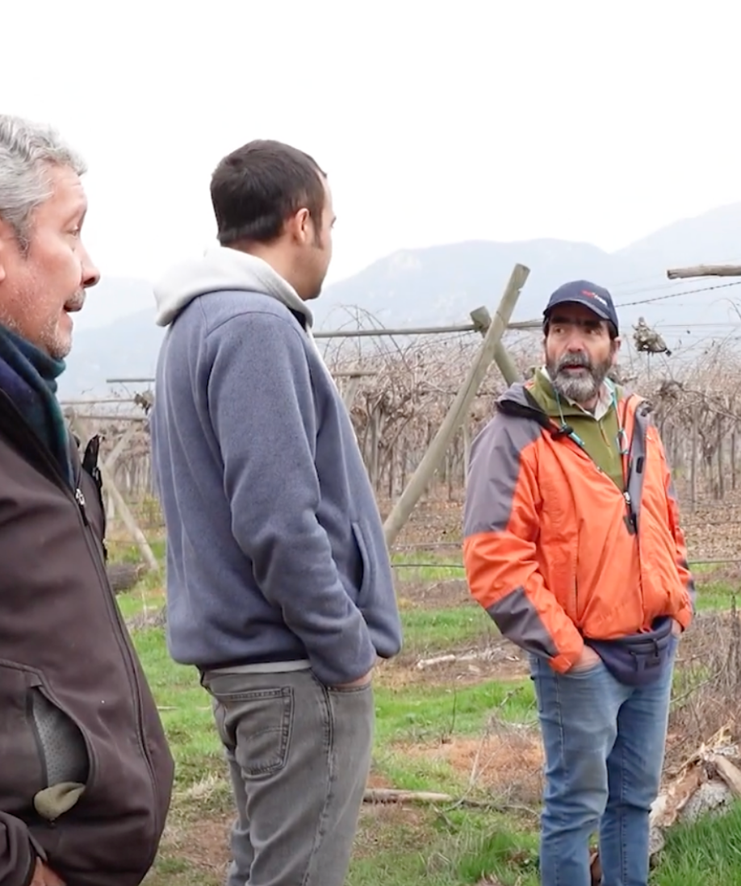
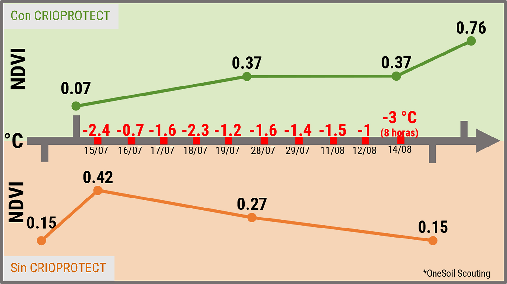
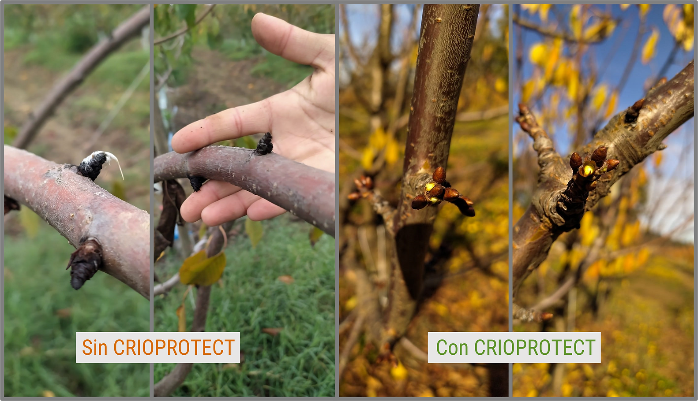

Resultados reales en los cultivos de Chile: cerezos, uvas, paltos, papas y más, que resistieron heladas y mejoraron su rendimiento.






Resistimos 6 heladas consecutivas de −2 a −3°C sin sufrir daños significativos en la plantación.
Con Nanoforte vimos resultados en la lechuga y el coliflor en apenas 7 días de aplicación.
Aplicamos en los duraznos y la diferencia en el cuaje y el vigor de la planta fue clara.
Descarga los resultados validados en distintos cultivos y regiones.
Conversa con nuestro equipo y arma la estrategia ideal para proteger y potenciar tu cultivo esta temporada.